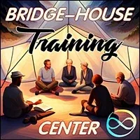
Bridge-House
Training Center
Bridge-House
- …
Bridge-House
Training Center
Bridge-House
- …
- The Bridge-House Training Center empowers you to embody and develop- Archan- life-training environments, otherwise known as:- Bridge-Houses- .
- The Training Center- A Bridge-House...- A - Bridge-Houseleads from the edges of modern culture over to next culture -- Archiarchy- the culture that is naturally emerging now that matriarchy and- patriarchyhave run their course.- Each - Cultural Creativescarries deep within them a longing to co-create how Archiarchy goes. Each of these ‘- Archan Specialties’ need space and time to grow, to mature, to produce results that empower others to build-out and inhabit these elements of Archiarchy. A Bridge-House is an ideal environment for Archan Specialties to come to life.- Holding space for a Bridge-House...- A Bridge-House is an evolutionary gameworld. The Bridge-House itself is on an ongoing path of transformation and redesign. This is only possible if the spaceholders (and participants) are themselves on the - Pathof Evolution through ongoing matrix building processes (emotional healing processes, adult and archetypal initiatory processes, and experimentation).- A Bridge-House is both an environment for - growing upand an environment to develop each participant's Archan Specialty (i.e. Nonmaterial Value). Holding space for a Bridge-House involves being skilled in holding space for and navigating evolutionary processes and invoking the potential Nonmaterial Value in the people from- your Circle.- These are advanced evolutionary skills, they take practice. - Therefore, the first step in becoming a Bridge-House spaceholder and gameworld builder is to become absurdly effective in delivering evolutionary processes. First and foremost, you are a spaceholder for - Healingand Transformation.- The journey of becoming a spaceholder starts with participating in - Rage Club Spaceholder Training,- Fear Club Spaceholder Training, the- Possibility Coaching Training- [,]the Matrix Building Team, or other radically responsibility spaceholder trainings. The next step is to apply to the- Possibilitator Trainingwhich the purpose is to discover and learn to deliver your- Nonmaterial Value.- Your own unique Archan Specialty is one of the central services that your Bridge-House offers both for the participants of the Bridge-House and the world. The participants of your Bridge-House come for the purpose of inhabiting - thatfacet of Archiarchy.- The Training Center's Gameplan- The Training Center's gameplan is simple but not easy: Empowering the embodiement and development of Archan cultures in life-skills training environment, otherwise known as: - Bridge-Houses.- The BH Training Center uses authentic adulthood and archetypal - Initiationsto empower radically responsible- Gameworld Builderswith the specific clarity, agency and connections to rapidly build additional new Bridge-Houses.- The way to inhabit Archiarchy is to build Archan Gameworlds in which other people can play. At the same time, people cannot enter Archiarchy as consumers. Therefore, Bridge-Houses focus on providing a platform for empowering its people's Nonmaterial Value, and for them to eventually build their own Archan Gameworld centered on that Nonmaterial Value. - This means that the background conversation of any Bridge-House is Gameworld Building. - The BHTC empowers Bridge-House Spaceholders to become Bridge-House Spaceholder Trainers, Gameworld Builder Trainers, and - Gameworld Consultantsthemselves.- Some of the Bridge-Houses created from BHTC participants will become BHTC Bridge-Houses of their own. Meaning, that the purpose of those Bridge-Houses will be to train the next generation of BH Spaceholders and Gameworld Builders. - Holding the vision that the first BHTC Bridge-House (see below) will not be the last one is an integral part of the Archiarchal culture of - replacing ourselves.- We are interested that the BHTC Bridge-Houses function following the Tansley effect. The Tansley effect is creating multiple parallel experiments working on the same ‘problem’ - in this case, building regenerative cultures for a bright future for humanity of Planet Earth. Each group of skilled and experimental edgeworkers routinely share their findings. Each new independent finding becomes a common input into everyone else’s process. The cumulative outputs is part of the - Creative Commons. The Tansley effect is much more effective and interesting than- Competition.- The Training Center's Campuses- The Bridge-House Training Center has both a online and presential campus. A presential campus is gearing up in the form of a Bridge-House Training Center Bridge-House, starting on February 1st, 2024. - See next section for more information about the BHTC Bridge-House.
-
The Bright Principles of the Bridge-House Training Center- RADICAL RESPONSIBILITY- POSSIBILITY- CLARITY- LOVE- EMPOWERMENT- INVENTION
- The Bridge-House Training Center- BRIDGE-HOUSE- The best place to learn how to hold space for a Bridge-House is... a Bridge-House! - But of course! - The BHTC Bridge-House brings together spaceholders and gameworld builders under the same roof - to learn to live together in an Archan culture for the development of Archan specialties. - When, Where, How Much...?- Let's get the logistics out of the way. - When?- The BHTC Bridge-House starts on February 1, 2024 for a period of 1-to-2 years. The participation in the BHTC Bridge-House is of 1 month minimum, there is no maximum length of participation. - Where?- The BHTC Bridge-House will be located in Central or South America. The final location is still to be announced. The tie, for now, is between San Cristobal, Mexico and Gramado, Brazil. It is possible that the BHTC Bridge-House move location after 6 months or splits in multiple BHTC Bridge-Houses. - How much?- We do not have concrete final prices as the location is still to be determined. We are estimating that the cost of rent including all utilities will be between 200-400 Euros / month. - The cost for the food is that of local market food. We share food costs equally. - Incidental living costs would need to be considered: buying seeds for the garden, hardware tools for fixing the place, etc... - There are no fees towards the spaceholders. - If the lack of money is the reason why you are hesitating to join the BHTC Bridge-House (or any Bridge-House), it is ridiculous. Because there is enough money in the world for you to join the Bridge-House. The conversation is not then about money, but: how are you blocking the resources to support your Evolutionary Path to flow through you? - This question is the gateway to multiple Emotional Healing Processes and thoughtware upgrade. - To prepare yourself, please read and - do the experiments at:- http://becomemoney.mystrikingly.com- http://youandyourjob.mystrikingly.com- http://nonmaterialvalue.mystrikingly.com- How many?- We are estimating that the Bridge-House will be inhabited by 8-to-15 spaceholders/gameworld builders at a time. - Context & Traditions of the BHTC Bridge-House- The context of the BHTC Bridge-House is - Radical Responsibility.- If we were perfectly clear about what - Radical Responsibilityis, there would no need to say more about the subject. It is, of course, not the case.- Radical Responsibility means: - What is, is, as it is, here and now in the moment, with no story attached.(Arnaud Desjardins)
- Just this.(Lee Lozowick)
- There is no such thing as a problem. It is impossible to be a victim. Irresponsibility is an illusion. You have a Box. You are not your Box. Low drama is Gremlin food. Responsibility is applied consciousness. If you see a job it is your job to do. The universe is built out of archetypal love.(Clinton Callahan)
- A Radically Responsible context invokes in each person the - Free and Natural Decontaminated AdultEgostate Archetypally Initiated Woman or Man, and the- Creative Collaborationbetween them.- The unquenchable clarity and unreasonable possibilities that emerge from such a clear context can make your - Gremlingo into an immediate freak-out self-abuse feeding-frenzy accompagnied- Voices,- Self-Cannibalismbehaviour,- Gremlin Violence,- Shame, Doubt,- Depressionand other mixed emotions,- Conclusions,- Projections,- Expectationsand- Resentments. This is why we have a list of requirement to apply to the BHTC Bridge-House.- In the BHTC Bridge-House, we apply - Torus Technologyfor our meeting and decision-taking. For more information about Torus Technology, go here:- https://torustechnology.mystrikingly.com/- [.]- The BHTC Bridge-House makes use of the distinctions, processes, skills and technology of - Possibility Management (- http://possibilitymanagement.org). Technology, tools and processes from other contexts are used to further the purpose of the BHTC Bridge-House, such as Permaculture, Natural Farming, Reforestation, Family Constellation, etc...- What You Will Learn in The Bridge-House- The BH Training Center does not follow the design of the school years (year 1, year 2, etc…). School years design assumes a uniform and linear learning process for each participant. - The BH Training Center is designed as a - matrix buildingenvironment. Matrix is the substance with which you catch- Consciousness. The more Consciousness you can catch into your- Being, the more you are able to notice, distinguish, hold and navigate, the more- Authorityyou have and most importantly the more- Agencyyou develop. Healing, Transformation, Initiation and skill-building are all based on the quality and density of your Matrix. As you build matrix, you evolve reflexively instead of through force and manipulation.- There is not one straight linear path to build matrix. Matrix is a complex multidimensional substance. Therefore, it is impossible to design a 1+1+1+1+1 = 5 curriculum for you to grow the matrix of a Bridge-House Spaceholder and Gameworld Builder. - However, there are definitely skills to practice and questions to investigate. - Questions such as: - What is the context of your BH? Your Codex and Rules of Engagement?
- How can you deepen the context of your BH?
- How can you create and weave a Team that will hold space for your BH evolution processes?
- How to define and activate the next steps to unfold your BH?
- How to face the situation when people in the BH want different things?
- How to handle emotional reactivity?
- How to handle value exchange, currencies, and economics?
- How to shift from hierarchy and 'leadership' to spaceholding in a Circle?
- What is an 'infinity ring'? What is the difference between BH decisions and Circle decisions?
- How can your BH creatively collaborate with other Gaian Gameworlds around the world?
- What else is possible for your BH that you could not imagine yet?
- How to create Legend Making actions? How to build and feed your BH support Circle?
- In the BHTC and especially in the BHTC Bridge-House, you will practice skills such as: - Creating Value (Nonmaterial mostly but also Material) for the local community, demonstrating the possibility of a different culture that is regenerative and generous
- Holding space for Bridge-House meetings, which are context deepening, guardianship, evolutionary and village weaving
- Building Bridge-House Traditions that reflect the values of the BH
- Meeting and including the resistance of participants, potential participants and local community members
- Cavitating and holding a Radically Responsible context for the purpose of growing up and discovering Nonmaterial Value
- Building an empowered and skilled Team
- Noticing unoccupied territories of research and exploration and bring the Bridge-House’s participants there
- Creating and providing an ongoing matrix building environment to feed all 5 bodies and provide both stress and relaxation (integration) activities and experiments
- Documenting the design, both the mistakes and successes, ongoing as part of the Bridge-House Value
- Clarifying your Gameplan
- Holding Discovery Space
- Spaceholding for each participants to move on their individual Quest
- The above list is not exhaustive, as you can imagine. - Requirements to Apply to the BHTC Bridge-House- Requirements: - You have completely and irrevocably left your parents’ house for more than 6 months at the start of your stay (this means that you have no clothes, photos, diplomas or anything else in storage in your parent’s house),
- You are no longer studying in a modern culture school(University or other programs) for the past 3 months,
- You are no longer working for a corporationfor the past 3 months,
- You hold space for evolutionary spaces (healing and transformation) for more than 3 months,
- You have participated or applying to the Gremlin TransformationCore Chapter,
- You have participated in a Spaceholder Training (RCST, FCST, Possibility Coaching Training, Matrix Building Team or otherwise),
- You have participated in at least one Expand The BoxTraining,
- You have participated in at least one Possibility Lab,
- You are in or applying to the Possibilitator Training,
- You have the ability to generate more than 600 Euros / month of income on average through delivering your Nonmaterial Value& other nickel machine
- The participation in the BHTC BH is of 1 month minimum, there is no maximum length of participation. - To apply, please contact Vera Franco, veralfranco@gmail.com or by Telegram: +44 7748 934374. - Applications are open from August 1st, 2023. - Vera will set up a conversaview with one of the main spaceholder for the Bridge-House: Clinton, Vera or Anne-Chloé. A conversaview is a space where both you and the spaceholder discover what is the next step for your participation in the Bridge-House. It can be anything. No two people would have the same steps. - When it is evident that you have entered the Bridge-House Training Center and that your next step is to join the BHTC BH, you have been organically ‘integrated’ in the amoeba, then you will be officially welcome to join the BHTC BH.
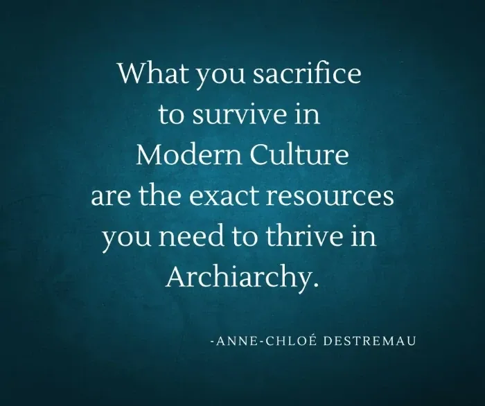
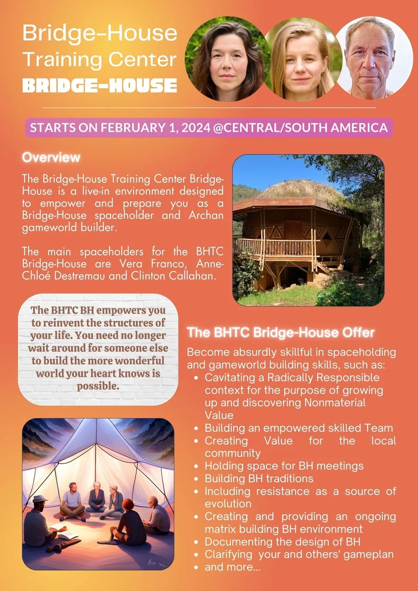
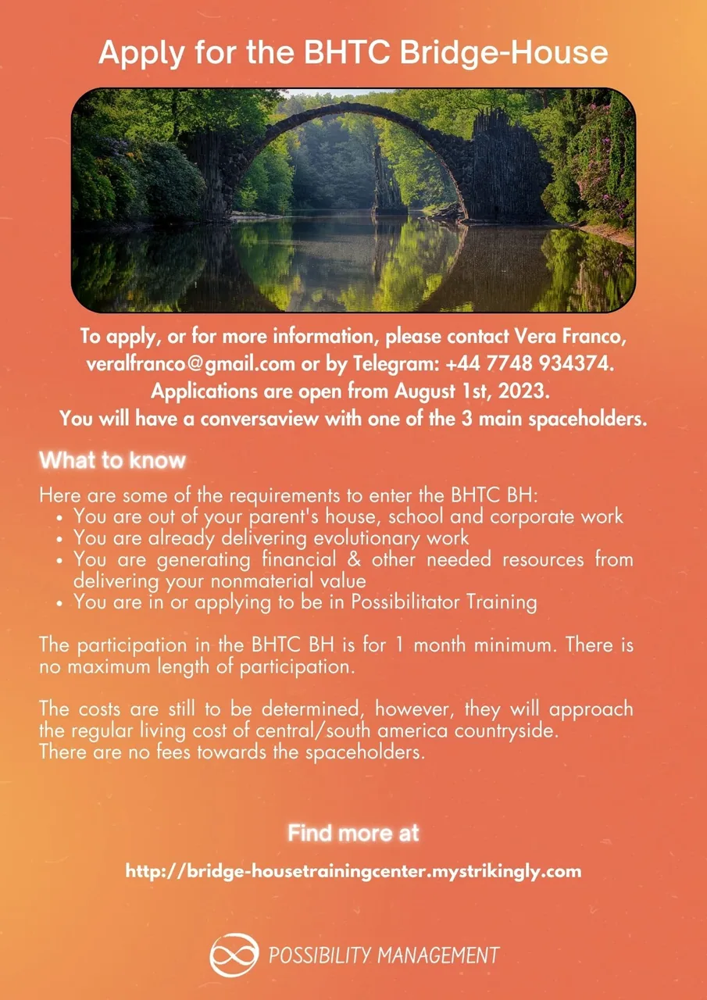
- Spaceholders- ...of the first Bridge-House Training Center. - # Vera Franco- Vera's first experince of Evolutionary Community living started in Findhorn Ecovillage where she lived for 10 years in Scotland. As she discovered her Nonmaterial Value, she moved out and became a nomad and a Possibility Management Trainer, now delivering - Expand The Boxand Possibility Labs around the world.- Vera is a educator at Ecoversity, and spaceholder for the Possibilitator Training, which is a Path for Possibilitators to find and sharpen their Nonmaterial Value. - In addition, Vera navigates Gremlin Transformation and Adult Egostate Decontaminations since 2020 for hundreds of gratefully transformed people. - She was a member of the Writing Bridge-House from August 2021 to August 2022 along with Anne-Chloé, Clinton and Devin Gleeson. - # Anne-Chloé Destremau- Anne-Chloé's Archan Specialty is as a Spaceholder Trainer and Gameworld Builder Trainer. - Anne-Chloé grew up in a bi-cultural, bi-language house in 5 different countries before she was 18 years. After trying herself out at being a professional swimmer and lawyer in Paris, she left modern culture behind on a 2-year world-tour in 2015. - She discovered the power of gameworlds when she built the Possibility Management Trainer Path in 2018. Since then, she has not stopped cavitating space for edgeworkers to find their place in Archiarchy, such as through the Rage Club & Fear Club Spaceholder Training, Practice & Spaceholder Skills Team, the Archiarchal Woman, the Gameworld Builder School, etc... - Anne-Chloé delivers - Expand The BoxTrainings, Possibility Lab and Specialty Labs around the world.- Anne-Chloé is the co-memetic-engineer of the Bridge-House gameworld with Clinton and lived in the Writing Bridge-House from August 2021 to August 2022. - # Clinton Callahan- Clinton is the originator of Possibility Management, the - Expand The BoxTraining, the StartOver.xyz game and the Bridge-House gameworld (those last two in collaboration with Anne-Chloé).- Clinton has participated in dozens of intentional community projects around the world starting in 1975 when he lived in Baja California with 4 friends making their own school. Clinton kept experimenting in France, in Germany and later on around the world while living in the nomadic nanonation of Possibilica. - Clinton is an - Expand The BoxTrainer, a Possibility Lab Trainer and a Possibility Trainer-Trainer and Trainer-Trainer-Trainer, and an author at Holm Press, Next Culture Press and Thoughtware Press.- He is the co-originator of the Bridge-House Gameworld. He lived in the Writing Bridge-House from August 2021 to August 2022.
- Click to listen to- Maurice Jarre's barn-building music- from the film- Witness.
-
The Emergence of- # Bridge-House- # Start Your Archan Gameworld- # Ways to Grow Archiarchy
- Experiments- Start building your matrix now.
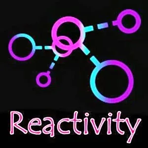
- DIAGRAM YOUR REACTIVITY- Your level of - unhookabilitycan be considered to be the measure of the success of your Bridge-House. Know your Reactivity points, and they can have no hold on you (except if you want them to as a low-grade food for your Gremlin).- The experiment starts by reading the Reactivity website entirely. Then, choose a blank page on your - Beep!Book and make 6 columns for the 6 types of Reactivity. Spend 30 minutes diagramming the Reactivity that you already know about yourselves. Then over the next 2 days, call 3 people who are on your Evolutionary Team - especially if they are joining you in your Bridge-House - and ask them to tell you about your Reactivity, write- all- of- what they say(and not what you hear) in the 6 columns.- Now that you have your baseline information, you are ready to diagram. Over the next 5-to-7 days, notice with neutral - Self-Observation:- * Which type of Reactivity are you the most prone to? - * What triggers each type of Reactivity? - * When does your Reactivity occurs the most often? - * Who (what kind of people) triggers your Reactivity? - * What emotions (pure or mixed) do your Gremlin loves to be triggered into? - * What Reactivity does your Gremlin love to create in others? For example, if your Gremlin plays weak, inferior, confused or victimy then it loves creating fear, confusion, persecution in other people. - * What creates a - Gapbetween you and your Reactivity? When are you less Reactive? Why?- Write down, or draw the diagram of your Reactivity over a week. Share the diagram with the 3 people who help you earlier in the experiment. - After completely diagramming your Reactivity, please register Matrix Code - BHTCBHxx.01in your free account at StartOver.xyz. This Experiment is worth 3 Matrix Points.- To continue working with and through your Reactivity, go to the - Reactivitywebsite and do all the experiment until you are 99% Unhookable. - COMPLETE SELF-ABUSE (FOREVER)- After completing this experiment, please register Matrix Code - BHTCBHxx.02in your free account at StartOver.xyz. This Experiment is worth 3 Matrix Points. - USE RADICAL SIMPLICITY AS AN UNHOOKABILITY TOOL- After completing this experiment, please register Matrix Code - BHTCBHxx.03in your free account at StartOver.xyz. This Experiment is worth 3 Matrix Points.
- USE RADICAL SIMPLICITY AS AN UNHOOKABILITY TOOL- After completing this experiment, please register Matrix Code - BHTCBHxx.03in your free account at StartOver.xyz. This Experiment is worth 3 Matrix Points. - USE POWERLESSNESS AS A GATEWAY TO YOUR OWN AUTHORITY- You might have the experience of living on 'thin ice', that at any moment the ground could collapse under your feet and you would be swallowed by the fate of the world, the world not quite noticing or caring that you are disappeared. You are powerless. Therefore, you do everything to 'keep it together' such as amassing what you have and know as a protection against the void. - The conflict lies in that, as a Bridge-House spaceholder, the Void is one of your greatest resource. Without the space of - Nothingness,- Creationcannot occur. Then, you will only make incremental change with very few new results because you are avoiding (no pun intended) the 'death and resurrection' processes that are necessary for Evolution.- Your ice is thin because the resources you rely on are fake (see previous experiment). More often than not they are external validation resources. - The way to 'thicken the ice' is to upgrade - who you are. Who you are can be describe as in: what domain do you have- Authority? And what domain you have- Agency? Authority precedes Agency. This means you first need to reclaim your Authority before you can gain Agency through skill-building practice and experiments.- The experiment is to call in a Bridge-House - 3Cellmeeting (the 3 or 4 people with whom you have decided to start a Bridge-House). If you do not have a Bridge-House 3Cell, you can use any of your 3Cell AND immediately start building your Bridge-House 3Cell (see experiment BHTCBHxx.12 below).- The Quest for the meeting is: in which domains of my life do I feel powerless? in which domains of my life do I know have Authority to choose, create, ask, declare, invent, take a risk? - One person - you - start and explore the block, the resistance, the identity, the old decision that is stopping you from having Authority in this particular domain of your life. The two other people are on your Team to find out the emotionally rigged construct. - The coach Team gives you: 2 experiments plus an Emotional Healing Process to reclaim your Authority. - The experiment is complete when you have gone through the Emotional Healing Process, done both experiments, and have reported back to your Team what you have discovered about your own Authority. - After completing this experiment, please register Matrix Code - BHTCBHxx.04in your free account at StartOver.xyz. This Experiment is worth 4 Matrix Points.
- USE POWERLESSNESS AS A GATEWAY TO YOUR OWN AUTHORITY- You might have the experience of living on 'thin ice', that at any moment the ground could collapse under your feet and you would be swallowed by the fate of the world, the world not quite noticing or caring that you are disappeared. You are powerless. Therefore, you do everything to 'keep it together' such as amassing what you have and know as a protection against the void. - The conflict lies in that, as a Bridge-House spaceholder, the Void is one of your greatest resource. Without the space of - Nothingness,- Creationcannot occur. Then, you will only make incremental change with very few new results because you are avoiding (no pun intended) the 'death and resurrection' processes that are necessary for Evolution.- Your ice is thin because the resources you rely on are fake (see previous experiment). More often than not they are external validation resources. - The way to 'thicken the ice' is to upgrade - who you are. Who you are can be describe as in: what domain do you have- Authority? And what domain you have- Agency? Authority precedes Agency. This means you first need to reclaim your Authority before you can gain Agency through skill-building practice and experiments.- The experiment is to call in a Bridge-House - 3Cellmeeting (the 3 or 4 people with whom you have decided to start a Bridge-House). If you do not have a Bridge-House 3Cell, you can use any of your 3Cell AND immediately start building your Bridge-House 3Cell (see experiment BHTCBHxx.12 below).- The Quest for the meeting is: in which domains of my life do I feel powerless? in which domains of my life do I know have Authority to choose, create, ask, declare, invent, take a risk? - One person - you - start and explore the block, the resistance, the identity, the old decision that is stopping you from having Authority in this particular domain of your life. The two other people are on your Team to find out the emotionally rigged construct. - The coach Team gives you: 2 experiments plus an Emotional Healing Process to reclaim your Authority. - The experiment is complete when you have gone through the Emotional Healing Process, done both experiments, and have reported back to your Team what you have discovered about your own Authority. - After completing this experiment, please register Matrix Code - BHTCBHxx.04in your free account at StartOver.xyz. This Experiment is worth 4 Matrix Points. - MAP YOUR INNER STRUCTURE - Read the Inner Structure website, and answer EVERY question from the section: 'HOW TO MAP YOUR INNER STRUCTURE?' - Build a consciously resilient, lean and clear Inner Structure. - After completing this experiment, please register Matrix Code - BHTCBHxx.05in your free account at StartOver.xyz. This Experiment is worth 3 Matrix Points.
- MAP YOUR INNER STRUCTURE - Read the Inner Structure website, and answer EVERY question from the section: 'HOW TO MAP YOUR INNER STRUCTURE?' - Build a consciously resilient, lean and clear Inner Structure. - After completing this experiment, please register Matrix Code - BHTCBHxx.05in your free account at StartOver.xyz. This Experiment is worth 3 Matrix Points. - RADICALLY RELY ON INFINITE RESOURCES - What do you rely on? Do you rely on what you know? Or your ability to survive? What do you rely on in others? What do you rely on in others? - Spend 3 days noticing what you rely on, what other people rely on and write down everything that you discover in your - Beep!Book.- It is likely that nobody ever taugh you about reliance or radical reliance. As you start noticing what people around you and yourself rely on, you will discover that you unconsciously rely on the same frail resources to provide you with a fake sense of 'safety': - being nice, being civilized, being accepted, looking good, how much money you have, how sucessful you are (which comes back to money), what you know, your Survival Strategies, your Reasons, your Justifications, your Conclusions, your Stories, your Positions...- Your Bridge-House will not - flyif you rely on ordinary resources. A Bridge-House is an ongoing- inventionexperiments. Invention requires a whole new set of resources at your immediate disposal when it is needed and wanted.- How do you get access to these resources? You radically rely on them. They are available, always and in infinite quantity. - This is the second part of the experiment: list 10 outer Infinite Resources to Radically Rely on. Such as: your Intuition, your Quest, your Path, one of your Bright Principle, Archetypal Love, your Stand, Gaia, the Unknown, the Void, your Team, your Circle, Energetic Body, your Power of Choosing, Declaring, Asking, E.C.C.O., your Authority, your Agency, your Muse, your Vision, ... - Choose one. Without knowing how it goes, Radically Rely on that resource: let it speak through you, let it choose which street you walk on, let it choose what you read, let it ask what it needs, etc... When you have jacked into the source of the Resource, choose the next Resource to practice radically relying on. - After completing this experiment, please register Matrix Code - BHTCBHxx.06in your free account at- [StartOver.xyz]. This Experiment is worth 4 Matrix Points.
- RADICALLY RELY ON INFINITE RESOURCES - What do you rely on? Do you rely on what you know? Or your ability to survive? What do you rely on in others? What do you rely on in others? - Spend 3 days noticing what you rely on, what other people rely on and write down everything that you discover in your - Beep!Book.- It is likely that nobody ever taugh you about reliance or radical reliance. As you start noticing what people around you and yourself rely on, you will discover that you unconsciously rely on the same frail resources to provide you with a fake sense of 'safety': - being nice, being civilized, being accepted, looking good, how much money you have, how sucessful you are (which comes back to money), what you know, your Survival Strategies, your Reasons, your Justifications, your Conclusions, your Stories, your Positions...- Your Bridge-House will not - flyif you rely on ordinary resources. A Bridge-House is an ongoing- inventionexperiments. Invention requires a whole new set of resources at your immediate disposal when it is needed and wanted.- How do you get access to these resources? You radically rely on them. They are available, always and in infinite quantity. - This is the second part of the experiment: list 10 outer Infinite Resources to Radically Rely on. Such as: your Intuition, your Quest, your Path, one of your Bright Principle, Archetypal Love, your Stand, Gaia, the Unknown, the Void, your Team, your Circle, Energetic Body, your Power of Choosing, Declaring, Asking, E.C.C.O., your Authority, your Agency, your Muse, your Vision, ... - Choose one. Without knowing how it goes, Radically Rely on that resource: let it speak through you, let it choose which street you walk on, let it choose what you read, let it ask what it needs, etc... When you have jacked into the source of the Resource, choose the next Resource to practice radically relying on. - After completing this experiment, please register Matrix Code - BHTCBHxx.06in your free account at- [StartOver.xyz]. This Experiment is worth 4 Matrix Points. - HAVE A TORUS TECHNOLOGY DAY IN YOUR NEIHBORHOOD - After completing this experiment, please register Matrix Code - BHTCBHxx.07in your free account at StartOver.xyz. This Experiment is worth 3 Matrix Points.
- HAVE A TORUS TECHNOLOGY DAY IN YOUR NEIHBORHOOD - After completing this experiment, please register Matrix Code - BHTCBHxx.07in your free account at StartOver.xyz. This Experiment is worth 3 Matrix Points.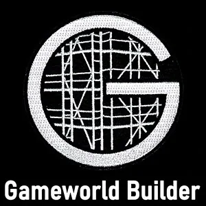
- WRITE A 1-PAGE CODEX FOR A TEMPORARY GAMEWORLD - The gameworld can exist - After completing this experiment, please register Matrix Code - BHTCBHxx.08in your free account at StartOver.xyz. This Experiment is worth 3 Matrix Points. - WHICH ONE OF THE 51 CORE INITIATIONS YOU HAVE BEEN THROUGH? - And which ones you have not? - After completing this experiment, please register Matrix Code - BHTCBHxx.09in your free account at StartOver.xyz. This Experiment is worth 3 Matrix Points.
- WHICH ONE OF THE 51 CORE INITIATIONS YOU HAVE BEEN THROUGH? - And which ones you have not? - After completing this experiment, please register Matrix Code - BHTCBHxx.09in your free account at StartOver.xyz. This Experiment is worth 3 Matrix Points.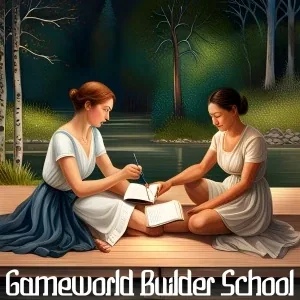
- IF YOU USE YOUR OWN BRIGHT PRINCIPLES, WHAT IS YOUR GAMEWORLD THEN? - Distill Your Bright Principles - After completing this experiment, please register Matrix Code - BHTCBHxx.10in your free account at StartOver.xyz. This Experiment is worth 3 Matrix Points. - SPEAK ABOUT YOUR GAMEWORLD TO THE WORLD - Make a video of yourself and put it on your website of you talking the Gamewold that you would like to create - After publishing the video on your website, sending it in your newsletter and sharing it in the Possibility Creation Village, please register Matrix Code - BHTCBHxx.11in your free account at StartOver.xyz. This Experiment is worth 3 Matrix Points.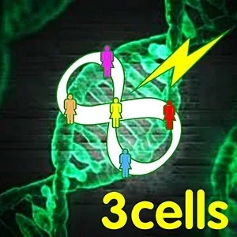
- BUILD YOUR BRIDGE-HOUSE 3CELL - Make a video of yourself and put it on your website of you talking the Gamewold that you would like to create - After your first Bridge-House 3Cell meeting, please register Matrix Code - BHTCBHxx.12in your free account at StartOver.xyz. This Experiment is worth 3 Matrix Points. - Impressions of Bridge-House- And more to come...
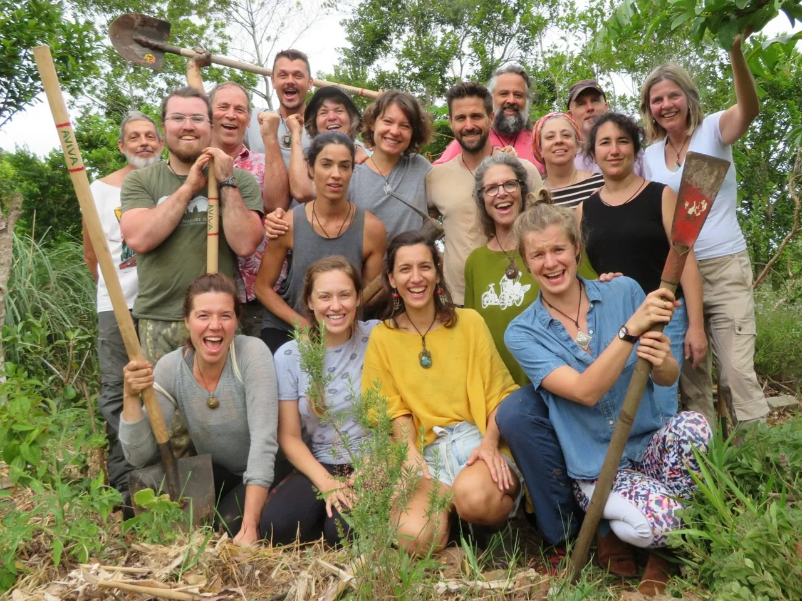
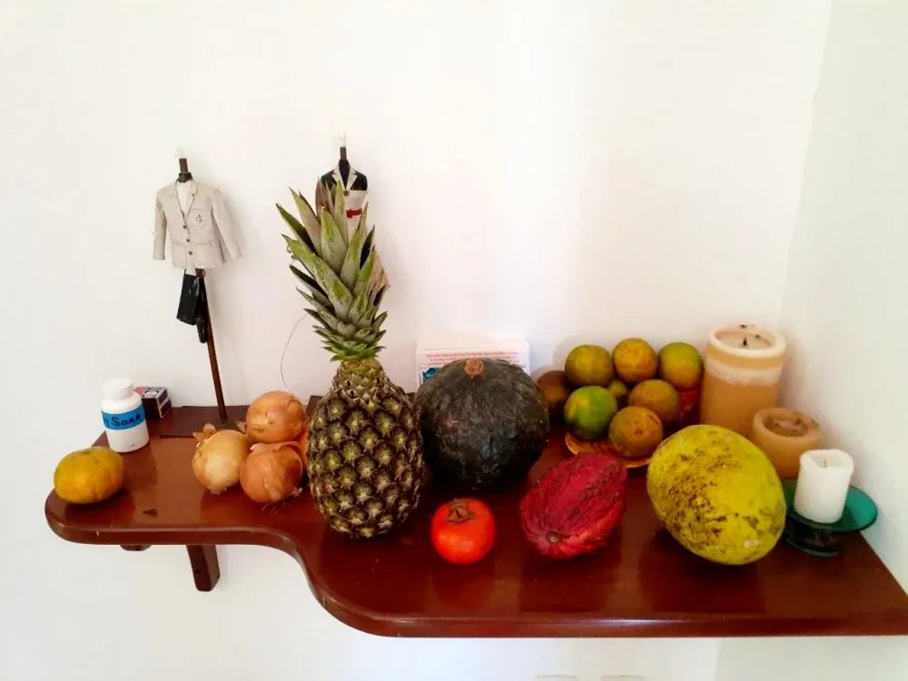
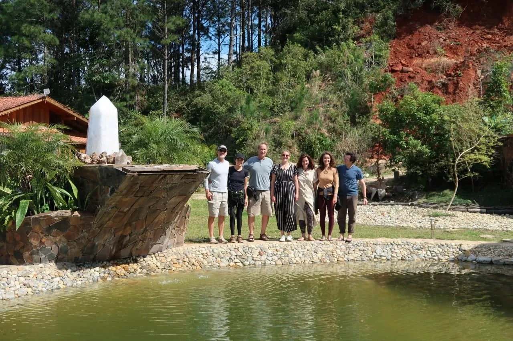
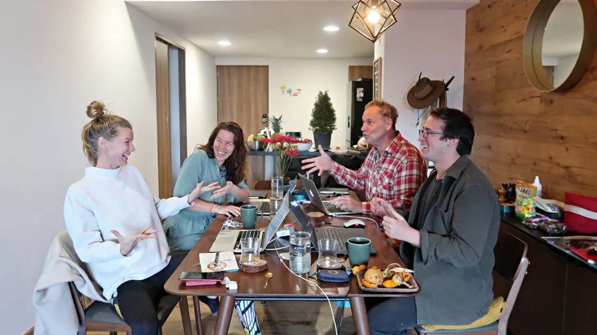
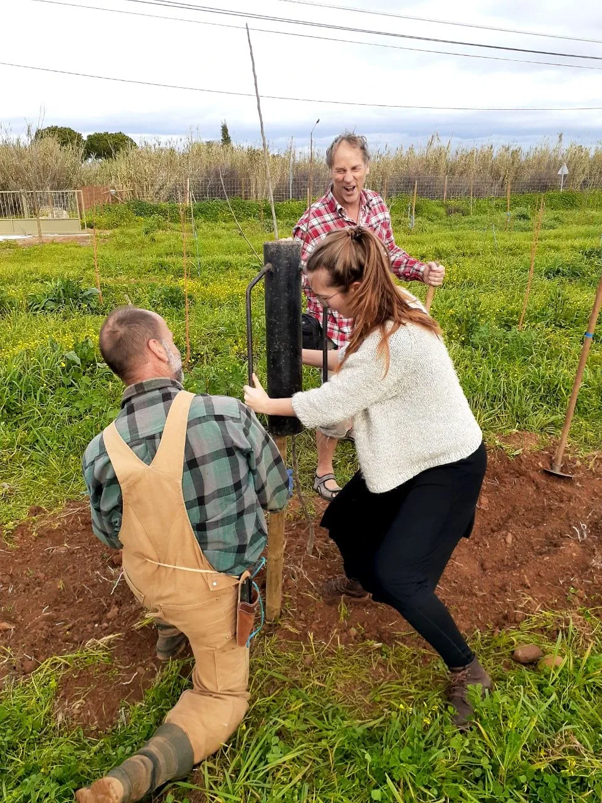
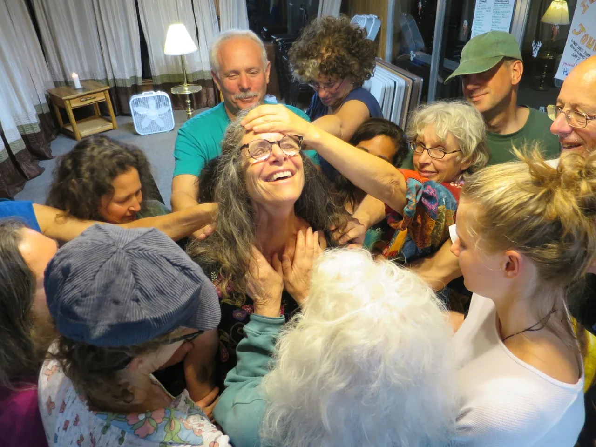
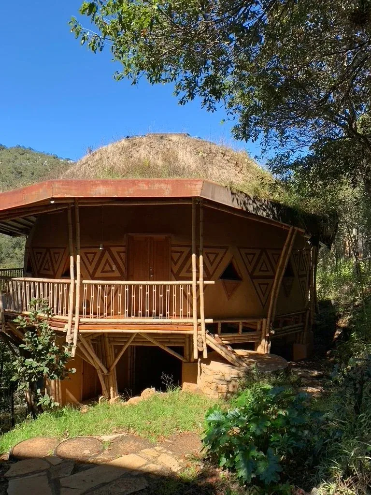
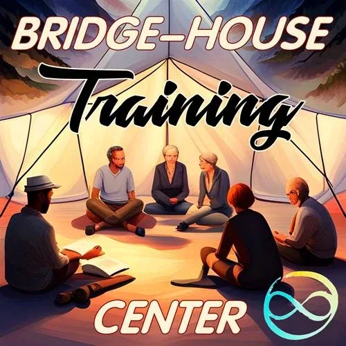
- Where do you want your future to come from?- What if you build a Gameworld for it? - ContactSelect...
- StartOver.xyz Note - NOTE:This website is a- Bubble in the Bubble Mapof the free-to-play, massively-multiplayer, online-and-offline, thoughtware-upgrade, matrix-building, personal-transformation, adventure-game called- StartOver.xyz. It is a- doorwayto- experimentsthat- upgrade your thoughtwareso you can- createmore- possibility. Your knowledge is what you think- about. Your- thoughtwareis what you use to think- with. When you- change your thoughtware, you go through a- liquid stateas your mind- reorganizesitself. Liquid states can bring up transformational- feelingsand- emotions. By- upgrading your thoughtwareyou- build matrixto hold more- consciousness (archived — not captured)and leave behind a life of- reactivity. No one can upgrade your thoughtware for you. No one can stop you from upgrading your thoughtware. Our theory is that when we- collectively build1,000,000 new Matrix Points we will change the morphogenetic field of the human race for the better. Please choose- responsiblyto read this website. Reading this whole website is worth 1 Matrix Point. Doing any of the experiments earns you additional Matrix Points. Please use Matrix Code BHTCBHxx.00 to log your Matrix Point for reading this website on- StartOver.xyz. Thank you for playing full out!